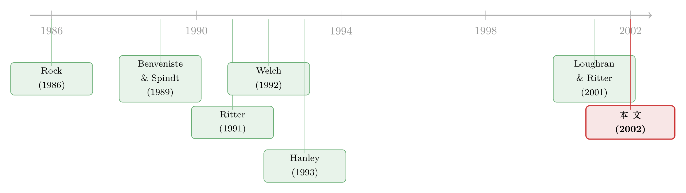

盖茨的那场「不高兴」：新股为什么总把钱留在桌上
本文读的是 Daniel (2002, Review of Financial Studies) ——对 Loughran 和 Ritter (2001) 那篇著名 IPO 论文的评论。作者先用微软上市的真实细节，把「发行人为什么不在乎留在桌上的钱」这个谜讲活；接着指出 LR 用前景理论给出的答案虽然漂亮，却被一组「长尾」的相关性证据顶住——首日收益的自相关一直拖到 12–13 个月，远超前景理论所能解释的一两个月；于是他提出另一种可能：新股折价其实是一场随商业周期起落的讨价还价，热市里发行人耗不起，议价能力最弱，钱就只能留在桌上。
1 引言：盖茨的那场「不高兴」
我们先不谈模型，也不谈回归，先讲一个故事。
1986 年 3 月，微软上市。在此之前的小半年里，《财富》(Fortune) 杂志的记者一路跟着比尔·盖茨和他的投行——高盛与 Alex. Brown——走完了整个 首次公开发行 (initial public offering, IPO) 的流程。这篇后来题为《Inside the Deal That Made Bill Gates \$350 Million》的报道，意外地给我们留下了一份极其罕见的、几乎是逐日记录的 IPO「现场笔记」。
故事是这样的：2 月初，微软递交招股说明书，定价区间 $16–$19。这个区间是盖茨硬压出来的——投行原本想报 $17–$20，盖茨偏要低一档。他的理由「保守得不能再保守」：$16 能保证投行不必再往下调价就把股票卖光，而 $20 会把微软的市值顶到五亿美元以上，他觉得「高得让人不舒服」。
接着，路演开始，2 月的市场出奇地好，道指涨了 8.8%。到了 3 月 10 日，开盘前三天，高盛的人飞到西雅图，带来「好消息」：机构投资者的认购簿(book)是高盛见过最漂亮的之一，他们预计这只股票几周后会涨到 $25 上下，因此建议发行价定在 $20–$21。
可盖茨听完，偏偏不觉得这是好消息。
他把投行的人请出房间，对自己的 CEO 和 CFO 说了一句到今天读来仍然刺耳的话：
「这些跟高盛关系好、能拿到股票的家伙，转手就能赚
$4。我们凭什么把公司几百万的钱，白白送给高盛最偏爱的那批客户？」
这一句话，恰恰是整篇论文要解释的谜:发行人明明看得清清楚楚，留在桌上的钱(money left on the table)是从自己老股东兜里转移给投行优质客户的一笔财富，可他们最终为什么还是「认了」? 盖茨想把价格抬到 $21–$22，高盛立刻搬出反对的理由:多报一美元会吓跑高质量投资者,而「只要几个重量级客户撤单,别的投资者就会以为这只股票失了光彩」——这几乎就是一段 信息级联 (informational cascade) 的口语版描述,高盛甚至搬出了 Sun 因定价过高从 $16 跌到 $14.50 的前车之鉴。最后双方在 $21 成交。第二天微软开盘 $25.75,收盘 $27.75。
钱,确确实实留在了桌上。而盖茨,尽管嘴上不高兴,身体却很诚实地签了字。
2 LR 的答案:发行人用「错位的参照点」算账
Loughran 和 Ritter (2001,下称 LR) 给这个谜的答案,是 前景理论 (prospect theory, PT)。
他们的逻辑分两步。第一步,发行人的偏好是损失厌恶的;第二步,「发行人把留在桌上钱的机会成本,看得没有直接付出去的承销费那么重要」。于是当一只股票在高于招股区间的价位发行时——也就是发行人手里那一大把股票刚刚大涨之时——折价造成的那点「损失」,被他和「账面财富的大涨」放在一起做了心理账户上的合并。盈亏相抵,他还是高高兴兴的。所以他不生气。
更妙的是,在 LR 的设定里,所有人都预见到了发行人会这样算账。于是这种「先让你大赚、再顺手切走一块」的承销报酬结构,反倒成了在给定前景理论偏好下让发行人效用最大化的安排。这有点像一份风险分担合约,但又不全是。
那么,这套理论能不能被检验?LR 的核心可检验含义其实很干净:招股价修正(filing price revision,即发行价与招股区间中点之差)应当与首日收益正相关。 直觉是,发行人在递交招股书那一刻就把 参照点 (reference point) 锚定 (anchoring) 在了招股区间;当行情向上、价格被向上修正时,他「赚到了」,于是愿意容忍更高的折价;反之向下修正时,他舍不得,折价就小。
这个含义连出几条经验事实,LR 一一验证:
- 首日收益(从发行价到首日收盘)显著为正——这就是众所周知的 IPO 折价之谜;
- 首日收益显著正自相关 (autocorrelation):滞后一个月的自相关高达
0.50,且 ρ(t, t−2) =0.18——这正是「热市」(hot IPO market) 的统计指纹,连每月上市家数也高度自相关; - 修正幅度与首日收益强正相关(这一点最早由 Hanley 1993 记录):向下修正的公司首日平均收益只有
4%,向上修正的却高达32%; - 修正与过去 15 天的市场收益正相关——但「相关得不够强」。
最后这条「不够强」,是全篇的要害。在 LR 的表 5 里,过去市场收益对修正的系数,向上修正组是 2.67,向下修正组是 0.76。换句话说,发行价对行情的反应「不充分」:如果向上修正能再大一些,首日就不会涨那么多。正是这个「不充分调整」,把 LR 的故事和 Benveniste 与 Spindt (1989) 的 动态信息获取 (dynamic information acquisition) 模型区分开了——后者预言,递表到发行之间的市场收益不该和折价有关,而数据偏偏说它强相关。
(关于这套「部分调整」与折价机制的更细致争论,可参见《新股「打折」的真正理由,不是让你说真话,而是先让你肯掏钱》;而把折价理解为一种心理账户的更一般讨论,可参见《前景理论想「废掉」均值-方差,却反被它收编》。)
3 一个被忽略的细节:相关性的「长尾」
故事讲到这里,前景理论看上去几乎天衣无缝。但真正关键的一步,是作者没有满足于复述 LR,而是自己动手又算了三张图——而这三张图,把 LR 的形式化模型顶在了墙上。
先看自相关。LR 用首日收益的正自相关来支持「锚定」机制:想想 5 月和 6 月上市的两批公司,它们「递表—发行」的窗口部分重叠,而首日收益又和这段窗口里到达的新信息正相关,于是两批的首日收益就被「焊」出了自相关。听起来很顺。可问题是,顺着这个机制,自相关最多只该拖到两三个月。 而作者算出来的首日收益自相关,一直显著到 12–13 个月——而且他特意排除了 1999 年那个反常的 IPO 大年,长尾依旧在那儿。一个只有一两个月「记忆」的锚定机制,凭什么解释一年多的相关性?
第二张图,作者把「月 t 的平均首日收益」对「从 t−3 到 t 的季度 CRSP 市值加权指数收益」做回归。结果是:折价幅度与滞后三到四个月的季度市场收益有关。 同样,这个滞后远比「递表—发行」那一两个月要长。
第三张图更耐人寻味:上市家数与首日收益的 互相关 (cross-correlation) 在滞后约 12 个月处最强,而同期(滞后 0)的相关却很小。也就是说,在折价最猛的那段时间之后大约一年,才会涌现出最多的公司排队上市。
把这三张图放在一起,结论很硬:IPO 首日收益,用发行前一年左右就已经能拿到的信息,就能预测。 这不是一个「参照点设在一两个月前」的故事能装得下的。前景理论也许是对的,但它显然不是故事的全部。
这里有一个值得记下的「副产品」:LR 表 5 那个把首日收益对修正回归的方程,R² 只有 1–2%。作者提醒,这要么说明这些公司在这段时期里特质风险大得惊人,要么说明发行人和投行把招股区间的中点定得糟透了。后一种可能,正好为下一节的「讨价还价」埋下伏笔。
4 反转:把「留在桌上的钱」看成一场讨价还价
于是反转出现了。这些长滞后的高自相关、高互相关,闻起来更像商业周期的味道——而商业周期,会让人想到一种和心理账户完全不同的机制:讨价还价。
作者的设想是这样的。假设发行公司把「热 IPO 市场」看成一个特别好的发行窗口——也许是因为整个市场、或它所在行业的估值此刻特别高。那么对它来说,任何拖延都极其昂贵:错过这个窗口,价格可能就回不来了。这恰恰对应标准 鲁宾斯坦讨价还价 (Rubinstein bargaining) 博弈里那个经典结论——谁更耗不起,谁的议价能力就更弱。 于是在热市里,发行人对投行和机构投资者的议价地位最差,投行和它的客户便可以理直气壮地索要高折价。发行人想换一家投行?换一家也一样有动机压价,而且拖延会让发行的好时光蒸发掉。
反过来,在冷 IPO 市场里(比如商业周期的谷底),发行的环境本就不好,拖延的代价反而低,发行人的议价地位因此强得多——他完全可以可信地威胁:不给我一个更高的价,我就不发了。
一句话:议价能力随商业与行业周期起落,折价也就随之起落。 这个机制天生带着「长记忆」,正好能装下那些拖到一年的相关性。
(把「冷热市场」当成发行人主动择时的结果,这条线在《新股的「冷热」,其实是投行在替你算的一笔账》和《新股的潮汐:为什么有的年份挤破头上市,有的年份门可罗雀?》里有更系统的理论化。)
当然,作者很诚实地承认,这个故事也还不完整。在一个竞争性的承销市场里,高质量投行本该努力树立「低折价」的声誉才对——可现实里没有。可能的解释有两层:其一,承销市场也许并不竞争,或者至少发行人并不认为它竞争(他们也许相信只有寥寥几家投行能把这单做好);其二,即便承销市场竞争,只要机构投资者那一端不是竞争性的池子,折价就仍然不可避免。在任一单 IPO 上,真正掌握信息的大型机构可能就那么几家,一旦它们选择不参与,其余机构宁可一起撤单,也不愿独自面对 Rock (1986) 那个经典的「柠檬问题」——逆向选择。微软那场戏里,「一半潜在退出者真的退出了」,恰恰是这种少数知情者拥有强议价权的活写照。
(关于「少数知情者撤单引发级联、从而把折价顶上去」的实证,可参见《12% 的「免费午餐」,为什么端到你面前就凉了?》。)
5 文献脉络
把这条线捋一捋,会看到一个漂亮的演进。
最早,Rock (1986) 用 逆向选择 给出了折价的第一个理性解释:无知投资者会被「赢者诅咒」吓退,发行人必须打折才能把他们留在场内。紧接着,Benveniste 和 Spindt (1989) 把视角转向定价过程本身,提出投行用折价去「换」机构投资者的真实信息——动态信息获取。Ritter (1991) 则掀开了另一面:IPO 长期跑输,暗示这个市场里存在系统性的错误定价或情绪。到了 Welch (1992),信息级联被正式写进序列销售的模型,解释了为什么发行可以「一哄而上」或「一哄而散」。

Hanley (1993) 提供了那块关键的经验拼图——部分调整现象,即修正与首日收益的正相关。而 LR (2001) 站在这块拼图上,用前景理论给出了一个全新的、行为金融式的解释。本文(Daniel 2002)正处在这条脉络的「质疑—延伸」节点:它不否认前景理论,却用一组更长滞后的相关性证据指出 LR 的形式化模型装不下全部数据,并把讨价还价与商业周期重新请回了舞台中央。
6 评论与延伸(Q&A + 研究方向)
(a) 几个可能的疑问
Q:微软只是一个孤例,凭一篇杂志报道就能下结论吗?
不能,作者自己也反复强调「这些是关于单一 IPO 的轶事,未必能推广」。微软故事的价值不在「证明」,而在「提出假说」:它把发行人明知折价、却仍接受折价这件反直觉的事,以及投行用「高质量投资者会撤单」作为压价理由这一点,演得格外清楚。真正承担举证责任的,是后面那三张基于全样本的图。
Q:前景理论被「否证」了吗?
没有。作者的措辞很克制:数据与 LR 的形式化模型不一致,但未必与该理论的某个扩展不一致。比如,只要把发行人的参照点设在「远早于发行日」的某个时点,前景理论也许仍能容纳那些长滞后相关。被顶住的是「参照点=招股区间中点、且只在一两个月前形成」这一具体设定,而不是损失厌恶本身。
Q:讨价还价假说和前景理论,究竟差在哪?
差在「钱为什么留在桌上」的归因。前景理论说,是发行人心理上不在乎(损失厌恶 + 心理账户);讨价还价说,是发行人客观上没得选(热市里耗不起,议价权最弱)。前者是偏好,后者是约束。两者都能解释「不生气」,但对滞后结构的预言不同——而数据更偏向带「长记忆」的后者。
Q:那个低到只有 1–2% 的 R² 该怎么读?
它本身就是一条线索。要么这些公司特质风险极大,要么招股区间中点定得很差。作者倾向后一种解读——如果连「参照点」本身都测不准,那么任何以参照点为核心的理论,其解释力天花板都会被这个测量误差压住。这也反过来支持「价格更多由事后的讨价还价、而非事前的锚点决定」。
Q:如果讨价还价是对的,为什么投行不靠「低折价」打出声誉?
作者承认这是该假说最大的软肋。他的辩解有二:承销市场可能并不(被认为)竞争;以及即便投行竞争,只要知情机构投资者那一端是寡头,折价就压不下去。换句话说,折价的租金最终可能落在机构投资者、而非投行手里——这是一个尚未被该文证实的猜想。
Q:这篇「讨论」对今天还有意义吗?
有。它示范了一种健康的怀疑:面对一个解释力很强的行为模型,先别急着鼓掌,去看它没承诺要解释的那些维度(这里是滞后结构)能不能站得住。一个「什么都能解释」的故事,往往恰恰因为缺乏可被证伪的边界而值得警惕。
(b) 几个可能的研究问题与提案
1. 把「讨价还价」假说搬到公司债一级市场。
【经济故事】公司债同样存在发行折价(新债上市首日的正收益),而信用市场的「冷热」比股市更剧烈——危机时一级市场近乎关闭,繁荣时发行人排队上市。如果议价能力随信用周期起落,那么折价应当在「热」的信用环境里更大、在发行人耗得起的环境里更小。 【可行性】中。需要 TRACE 的逐笔成交、Mergent FISD 的发行条款,以及信用利差/发行量的周期指标。识别上的难点是把「议价能力」与「补偿逆向选择/流动性」分开——可借同一发行人在不同周期发行的多只债券做发行人固定效应。(关于新债折价的量级,可参见《新债上市第一笔成交,凭什么白赚 47 个基点?》。)
2. 折价与机构投资者池子的「竞争度」。
【经济故事】作者把折价的最后一道防线归到「知情机构投资者不是竞争性池子」。那么一个直接的检验是:当某只新股的潜在大型机构买家越集中(越像寡头),折价是否越高? 【可行性】中偏低。需要配售层面的数据(谁拿到了多少),这类数据在多数市场不公开;少数监管披露(如某些市场的配售明细)或承销商内部数据是突破口。识别难点在于机构集中度本身可能内生于发行质量。
3. 把「首日收益可被一年前信息预测」做成一个交易/资本配置含义。
【经济故事】既然折价用发行前约一年的市场收益就能预测,那么发行人(及其老股东)理论上可以据此择时,把发行推迟到议价权更强的窗口。问题是:真这样做的发行人,长期表现是否更好? 【可行性】高。Ritter 的网站长期公开月度首日收益与发行家数,CRSP 提供市场收益,样本可一直延伸到今天。直接复现作者的图 1–3 并外推到 2002 年之后,本身就是一个低成本、高价值的「再现性」练习。
4. 外资持有人与新兴市场 IPO 折价的周期性。
【经济故事】在新兴市场,外资机构往往就是那「少数知情、议价权强」的买家。当外资准入(可投资度)放宽或收紧时,本地发行人的议价地位会随之变化,折价的周期特征应当随之改变。 【可行性】中。需要分国别的 IPO 数据与外资准入指标(如 MSCI 可投资度)。识别可借准入改革的时点做事件研究,但需小心同期的其他制度变化。
参考文献
Benveniste, L. M., and P. A. Spindt (1989). How Investment Bankers Determine the Offer Price and Allocation of New Issues. Journal of Financial Economics 24(2), 343–361.
Hanley, K. W. (1993). The Underpricing of Initial Public Offerings and the Partial Adjustment Phenomenon. Journal of Financial Economics 34(2), 231–250.
Loughran, T., and J. Ritter (2001). Why Don't Issuers Get Upset About Leaving Money on the Table in IPOs? Review of Financial Studies 15(2), 413–443.
Ritter, J. R. (1991). The Long-Run Performance of Initial Public Offerings. Journal of Finance 46(1), 3–27.
Rock, K. (1986). Why New Issues Are Underpriced. Journal of Financial Economics 15(1–2), 187–212.
Uttal, B. (1986). Inside the Deal That Made Bill Gates \$350 Million. Fortune, July 21.
Welch, I. (1992). Sequential Sales, Learning, and Cascades. Journal of Finance 47(2), 695–732.
我的判断:作为一篇「讨论」,这篇文章的贡献不在于推翻 LR,而在于用一组最廉价、最可复现的相关性证据,划出了前景理论解释力的边界——首日收益的记忆长达一年,而锚定机制只有一两个月的记忆,这个量级上的错配是致命的。它最有价值的遗产,是把「讨价还价 + 商业周期」重新摆上桌面,并诚实地点出了这个假说自己的软肋(承销市场为何不靠声誉竞争)。对识别的担忧也很直白:三张图都是时间序列上的相关,既没有外生冲击,也没有把「机构集中度」「行业估值」这些渠道变量真正分离出来,因此「讨价还价」目前还停留在「与数据相容的猜想」,而非被识别出的因果。我最想看到的后续,是有人拿到配售层面的数据,把折价的租金到底落进了谁的口袋——投行,还是那几家「高质量投资者」——一笔一笔地算清楚。